{% extends "layout.html" %}
{% load static %}

{% block css %}
<style>
    * {
        font-size: 20px;
    }

    body {
        font-family: Arial, sans-serif;
        color: #eee;
        margin: 0;
        padding: 0;
        background-color: #1e1e2f;
        /* 深色背景 */
    }


    .select-container {
        text-align: center;
        margin: 0;
    }

    select {
        padding: 8px;
        border-radius: 4px;
        border: none;
        background-color: #444;
        color: #fff;
        font-size: 16px;
    }

    .server_panel {
        width: 450px;
    }

    .pid_panel {
        float: left;
        width: 80%;
    }

    .cpuPanel {
        margin-left: 10px;
        float: left;
    }


    .panel {
        color: black;
    }

    .message-box {
        position: fixed;
        top: 30%;
        right: 0;
        margin: 0 auto;
        left: 60%;
        transform: translateX(-50%);
        background-color: #f8d7da;
        color: #721c24;
        padding: 10px 20px;
        border-radius: 5px;
        box-shadow: 0 2px 5px rgba(0, 0, 0, 0.1);
        opacity: 1;
        transition: all 0.5s ease-in-out;
        display: none;
        /* 默认隐藏 */
    }

    .message-box.fade-up {
        top: -50px;
        /* 向上移动超出视窗的位置 */
        opacity: 0;
    }

    .tranProcessPanelHeight {
        height: 35px;
        line-height: 35px;
    }

    .migrationPIDPlane {
        position: fixed;
        top: 30%;
        right: 0;
        left: 15%;
        margin: 0 auto;
        box-shadow: 0 4px 8px rgba(0, 0, 0, 0.25),
            /* 主阴影，颜色更深 */
            0 2px 4px rgba(0, 0, 0, 0.30),
            /* 中等距离的模糊，颜色更深 */
            0 1px 2px rgba(0, 0, 0, 0.35);
        /* 最近的模糊，颜色更深 */
        !important;
    }

    .glyphicon:hover {
        background-color: rgba(0, 0, 0, 0.2);
    }

    option {
        color: white;
    }
</style>
{% endblock %}

{% block content %}
<h2>调优前后分析</h2>
<div style="position: relative;">
    <div class="server_panel panel panel-primary">
        <div class="panel-heading">服务器地址信息</div>
        <div class="show panel-body">
            <div class="select-container list-group col-xs-5 tranProcessPanelHeight">
                <select id="ipSelect" onchange="paddingPort()">
                    {# <option value="1234">IP: 3333333331234</option>#}
                    {# <option value="533333333333333678">PID: 56333333378</option>#}
                    {# <option value="91011">PID: 91011</option>#}
                    <!-- 在这里添加其他PID选项 -->
                </select>
            </div>

            <div class="select-container list-group col-xs-5 tranProcessPanelHeight">
                <select id="portSelect">
                    <option value="1234">PORT: 1234</option>
                    <option value="5678">PID: 5678</option>
                    <option value="91011">PID: 91011</option>
                    <!-- 在这里添加其他PID选项 -->
                </select>
            </div>
            <div>
                <button class="btn-primary tranProcessPanelHeight" style="color: white !important;"
                    onclick="get_info()">确认</button>
            </div>
        </div>
    </div>

    <div class="panel panel-default">
        <div class="panel-heading">系统IO速度对比
             <span class="showBody right glyphicon glyphicon-chevron-down" aria-hidden="true"></span>
            </div>
        <div class="panel-body">
            <div>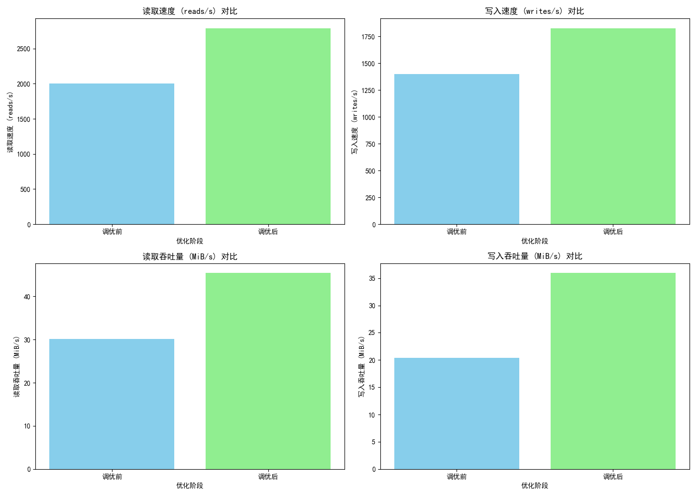</div>
        </div>
    </div>
    <div class="panel panel-default">
        <div class="panel-heading">CPU性能对比<span class="showBody right glyphicon glyphicon-chevron-down" aria-hidden="true"></span></div>
        <div class="panel-body">
            <div>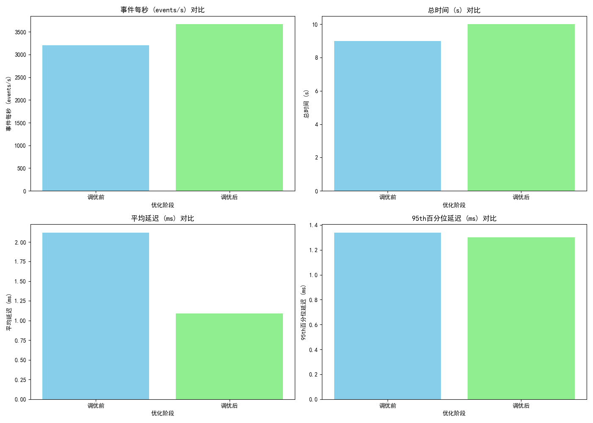</div>
        </div>
    </div>
    <div class="panel panel-default">
        <div class="panel-heading">数据库查询索引对比<span class="showBody right glyphicon glyphicon-chevron-down" aria-hidden="true"></span></div>
        <div class="panel-body">
            <div class="panel-body">
                <div>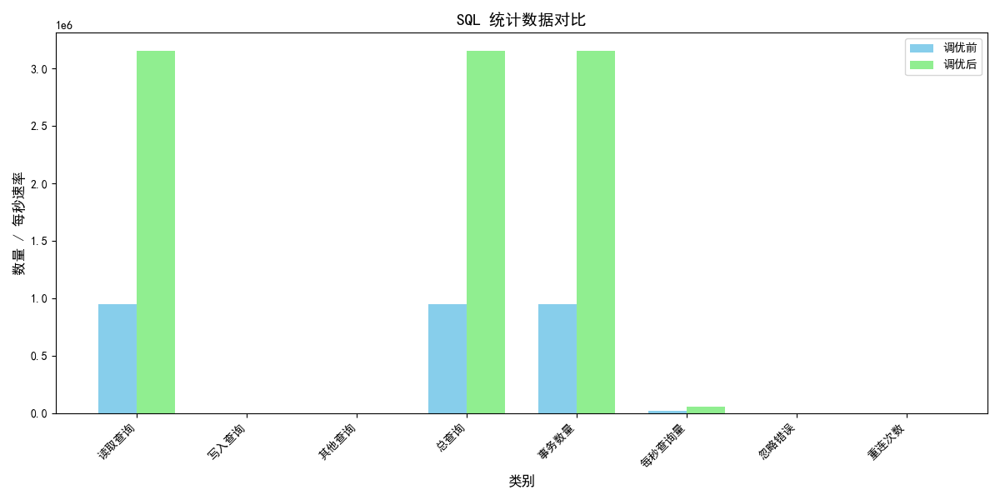</div>
                <div>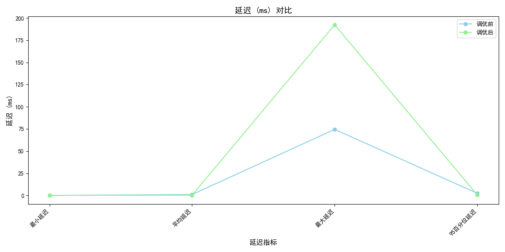</div>
            </div>
        </div>
    </div>
    <div class="panel panel-default">
        <div class="panel-heading">数据库更新索引对比<span class="showBody right glyphicon glyphicon-chevron-down" aria-hidden="true"></span></div>
        <div class="panel-body">
                            <div>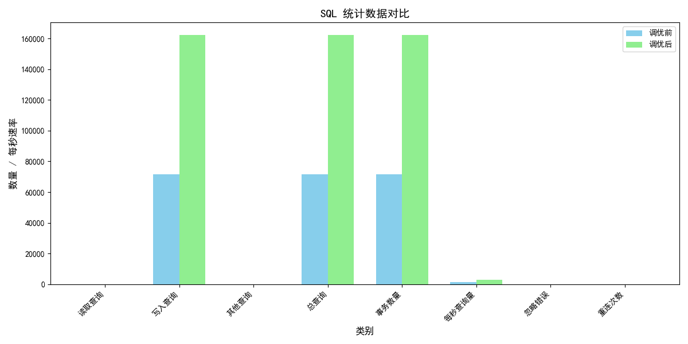</div>
                            <div>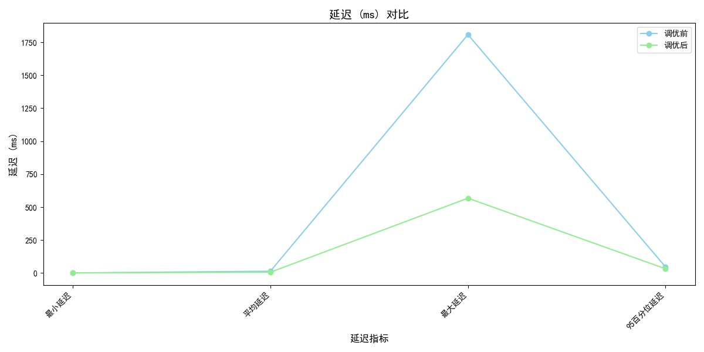</div>
        </div>
    </div>
    <div class="panel panel-default">
        <div class="panel-heading">数据库插入只读数据效率对比<span class="showBody right glyphicon glyphicon-chevron-down" aria-hidden="true"></span></div>
        <div class="panel-body">
            <div>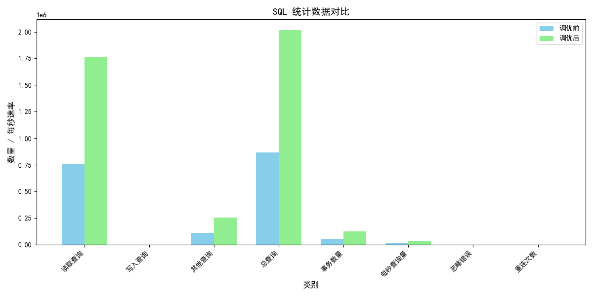</div>
            <div>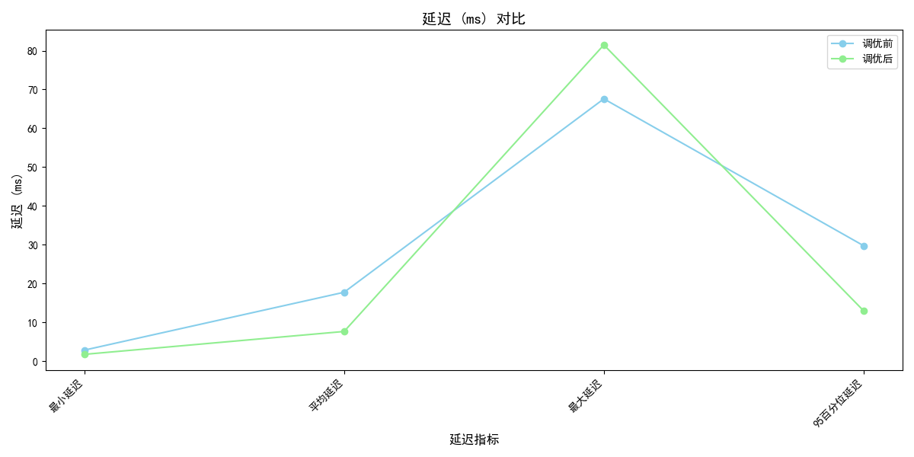</div>
        </div>
    </div>
    <div class="panel panel-default">
        <div class="panel-heading">数据库插入读写效率对比<span class="showBody right glyphicon glyphicon-chevron-down" aria-hidden="true"></span></div>
        <div class="panel-body">
                        <div>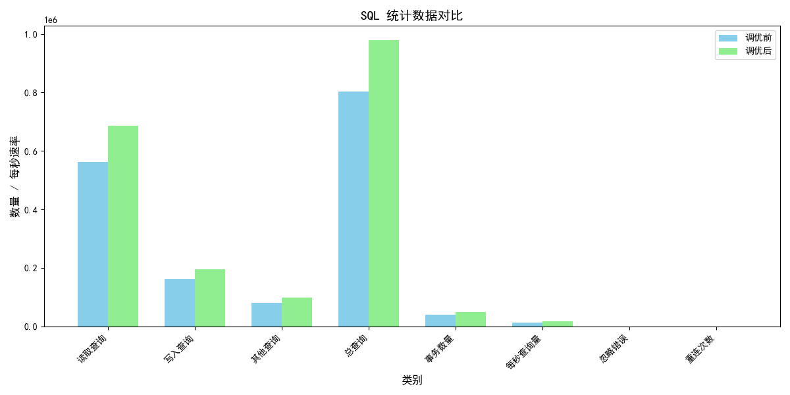</div>
                        <div>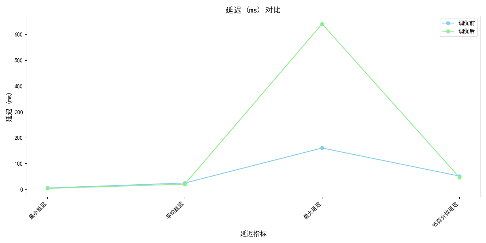</div>
        </div>
    </div>

    <div class="panel panel-default">
        <div class="panel-heading">ceph数据随机读写速度对比<span class="showBody right glyphicon glyphicon-chevron-down" aria-hidden="true"></span></div>
        <div class="panel-body">
            <div>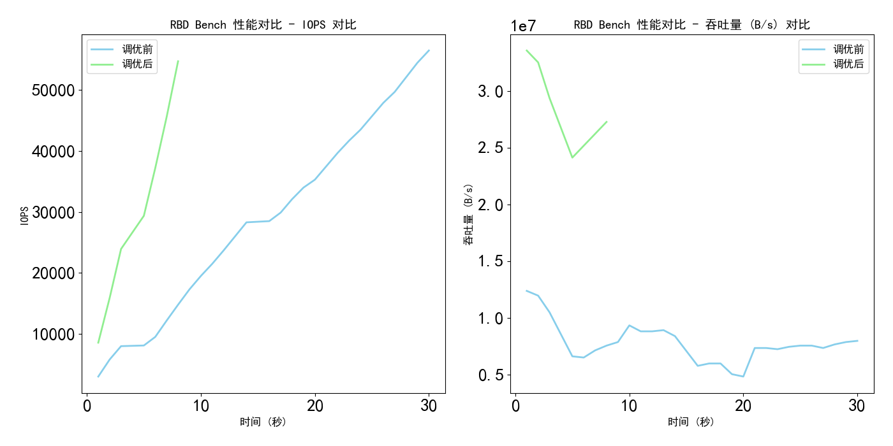</div>
        </div>
    </div>
    <div class="panel panel-default">
        <div class="panel-heading">ceph数据随机读速度对比<span class="showBody right glyphicon glyphicon-chevron-down" aria-hidden="true"></span></div>
        <div class="panel-body">
                        <div>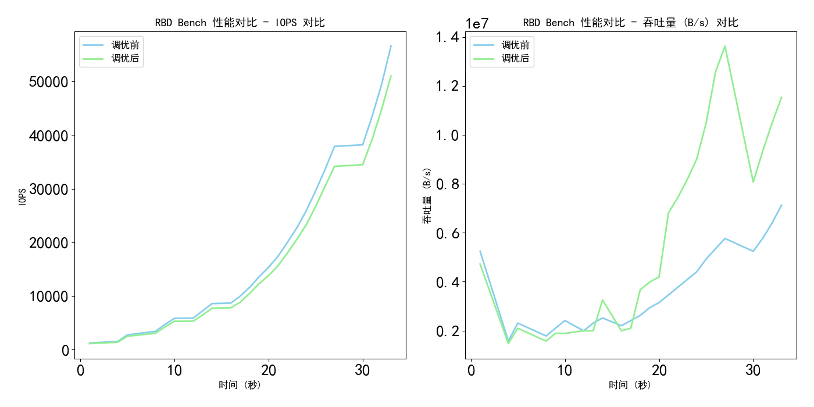</div>
        </div>
    </div>
    <div class="panel panel-default">
        <div class="panel-heading">ceph数据随机写速度对比<span class="showBody right glyphicon glyphicon-chevron-down" aria-hidden="true"></span></div>
        <div class="panel-body">
                    <div>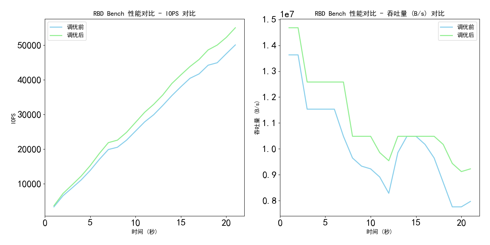</div>
        </div>
    </div>

</div>
{% endblock %}

{% block js %}

<script>
    function hideMigrationPidPannel() {
        $('#migrationPanel').toggle();
    }
    function showPanelBody(){
        setTimeout(() => {
            $(".panel-body").show();
        }   , 5000)
    }
    function hidePanelBody(){
            $(".panel-body").hide();
            $(".show").show();


    }
    hidePanelBody()

    // PID对应的数据
    let processData = {};
    // 进程
    let pidTag
    let processID
    // 核ID
    let cpuIdTag
    let CPUID
    // 更新数据flag
    let updateFlag = false
    let runUpdataFlag = false
    let intervalId;


    $(document).ready(function () {
        paddingIp()
        // 默认隐藏
        $('#migrationPanel').toggle();
        pidTag = $('#currProceessPID')
        cpuIdTag = $('#currCPUId')


        $(".panel-body").click(function () {
            $(this).toggle();
        })
    });


    function updataCurrCidPid(pid, cid) {
        pidTag.text(pid)
        cpuIdTag.text(cid)
    }

    function alterMessage(message) {
        const messageBox = $('#messageBox');
        messageBox.text(message)
        // 显示消息框
        messageBox.css('display', 'block');

        // 延迟1秒后执行
        setTimeout(() => {
            messageBox.addClass('fade-up'); // 添加类以触发CSS动画
        }, 1000); // 1000毫秒等于1秒

        // 动画结束后隐藏消息框
        messageBox.one('transitionend', function () {
            if ($(this).hasClass('fade-up')) {
                $(this).css('display', 'none');
                $(this).removeClass('fade-up'); // 移除类以便下次使用
            }
        });
    }

    function get_info() {
        let ip = $("#ipSelect").val();
        let port = $("#portSelect").val();
        let tp = "GETPIDINFO"
        if (!runUpdataFlag) {
            intervalId = setInterval(() => {
                requestNewPidData(ip, port, tp)
            }, 5000)
        }
        runUpdataFlag = true
        showPanelBody()
    }

    // 请求新的 PID 数据
    function requestNewPidData(ip, port, tp, changeCpuId = null, currPid = null) {
        $.ajax({
            url: '/api/pidInfo',
            type: 'POST',
            dataType: 'json',
            data: {
                ip: ip,
                port: port,
                tp: tp,
                changeCpuId: changeCpuId,
                currPid: currPid
            },
            success: function (rep) {
                if (tp === "GETPIDINFO") {
                    // 更新页面数据
                    const processData = rep.data
                    const $tableBody = $('#tableBody');
                    const $tranCPUbody = $("#CPUID")
                    const $CPUbody = $("#CPUBIANHAO")


                    $tableBody.empty()
                    $CPUbody.empty()
                    $tranCPUbody.empty()
                    const processIds = processData['进程号'];
                    const coreNumbers = processData['CPU核心'];
                    const commands = processData["启动命令"];
                    const cpuId = processData["CPUCount"];
                    // 进程信息
                    for (let i = 0; i < processIds.length; i++) {
                        const row = $('<tr></tr>'); // 创建一个新的 tr 元素
                        row.html(`
                    <td>${processIds[i]}</td>
                    <td>${coreNumbers[i]}</td>
                    <td>${commands[i]}</td>
                    <td><button class="btn btn-sm btn-primary migrate-btn">迁移进程</button></td>
                `);
                        $tableBody.append(row);

                        // 为按钮添加点击事件
                        row.find('.migrate-btn').click(function () {
                            const cells = $(this).closest('tr').find('td');
                            const processId = cells.eq(0).text();
                            const coreNumber = cells.eq(1).text();
                            const command = cells.eq(2).text();
                            processID = processId
                            CPUID = coreNumber
                            updataCurrCidPid(processId, CPUID)
                            $('#migrationPanel').toggle();
                        });
                    }
                    // cpu编号
                    for (let i = 0; i < cpuId.length; i++) {
                        const row = $("<li></li>")
                        const transRow = $("<option></option>")
                        transRow.val(`${cpuId[i]}`)
                        transRow.text(`${cpuId[i]}`)
                        row.addClass("list-group-item")
                        row.text(`${cpuId[i]}`)
                        $CPUbody.append(row)
                        $tranCPUbody.append(transRow)
                    }
                } else if (tp === "CHANGECPUID") {
                    alterMessage("修改成功")
                }
            },
            error: function (xhr, type, errorThrown) {
                if (intervalId !== null) {
                    clearInterval(intervalId)
                    runUpdataFlag = false
                }
                alert("该IP地址无Agent");
            }
        });
    }

    function sendMigrationPid() {


        $('#migrationPanel').toggle();
        let ip = $("#ipSelect").val();
        let port = $("#portSelect").val();
        let tp = "CHANGECPUID"
        let processid = processID
        let changeCpuID = document.getElementById("CPUID").value
        requestNewPidData(ip, port, tp, changeCpuID, processid)

    }

    async function requestIpAndPort(tp, name, value = {}) {
        // 停止请求
        console.log(intervalId)
        if (intervalId !== null) {
            clearInterval(intervalId)
            runUpdataFlag = false
        }
        try {
            const response = await $.ajax({
                url: `/api/${tp}/${name}/twoModel`,
                type: 'POST',
                dataType: 'json',
                data: value,
                // 指定请求内容类型
                contentType: 'application/json'
            });
            return response;
        } catch (error) {
            alert("请求超时");
            return null;
        }
    }


    async function paddingIp() {
        let res = await requestIpAndPort("b2", "get_ipadress");
        // 检查 res 是否有效
        if (!res) {
            console.warn("Received undefined or null data");
            return;
        }


        // 获取 ipSelect 元素
        const $ipSelect = $('#ipSelect');

        // 清空已有选项
        $ipSelect.empty();
        // 遍历 res 数据并创建新的 option 元素
        for (const ip in res) {
            const displayValue = res[ip];  // 假设 displayValue 是你想显示的 IP 或 PID 信息
            for (const i in displayValue) {
                $ipSelect.append(`<option value="${displayValue[i]}">IP: ${displayValue[i]}</option>`);
            }
        }

        // 选中第一个 IP
        if ($ipSelect.children().length > 0) {
            $ipSelect.val(Object.values(res)[0]);  // 选中第一个 IP
        }
        paddingPort()
    }


    async function paddingPort() {

        let value = JSON.stringify({
            ip: $("#ipSelect").val()
        })
        let res = await requestIpAndPort("b2", "get_port", value = value);
        // 检查 res 是否有效
        if (!res) {
            console.warn("Received undefined or null data");
            return;
        }
        // 获取 portSelect 元素
        const $portSelect = $('#portSelect');
        // 清空已有选项
        $portSelect.empty();

        // 遍历 res 数据并创建新的 option 元素
        for (const port in res) {
            $portSelect.append(`<option value="${res[port]}">PORT: ${res[port]}</option>`);
        }

        // 选中第一个 PORT
        if ($portSelect.children().length > 0) {
            $portSelect.val(Object.values(res)[0]);  // 选中第一个 PORT
        }

    }
</script>

{% endblock %}